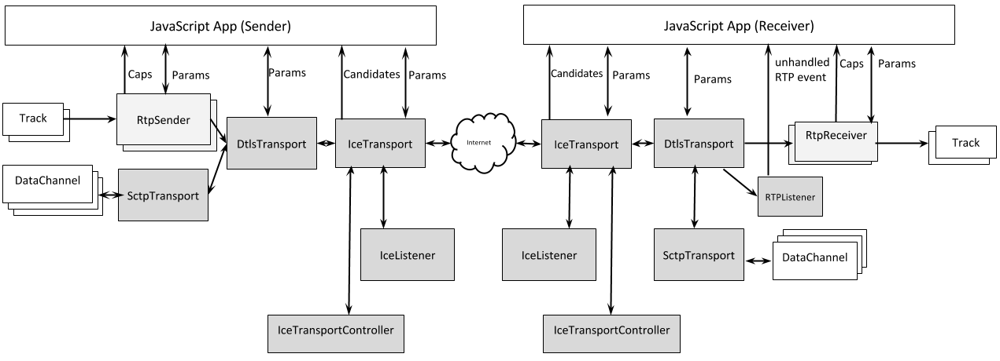
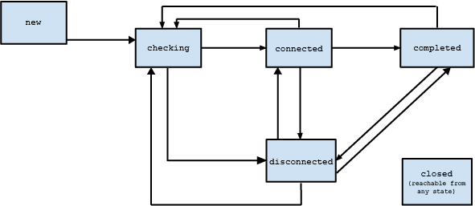

This document defines a set of ECMAScript APIs in WebIDL to allow media to be sent and received from another browser or device implementing the appropriate set of real-time protocols. However, unlike the current WebRTC 1.0 APIs, ORTC does not mandate a media signaling protocol or format. As a result, ORTC does not utilize Session Description Protocol (SDP) within its APIs, nor does it mandate support for the Offer/Answer state machine. Instead, ORTC focuses on "connections" and "tracks" being carried over those connections.
Object RealTime Communications (ORTC) provides a powerful API for the development of WebRTC based applications. ORTC does not mandate a media signaling protocol or format (as the current WebRTC 1.0 does by mandating SDP Offer/Answer). Instead, ORTC focuses on "sender", "receiver" and "transport" objects, which have "capabilities" describing what they are capable of doing, as well as "parameters" which define what they are configured to do. "Tracks" and "data channels" are sent over the transports, between senders and receivers.
This specification defines several objects: RTCDtlsTransport (Section 2), RTCIceTransport (Section 3), RTCIceListener (Section 4), RTCRtpSender (Section 5), RTCRtpReceiver (Section 6), RTCRtpListener (Section 7), RTCDtmfSender (Section 9), RTCDataChannel (Section 10), and RTCSctpTransport (Section 11); RTP dictionaries are described in Section 8.
In a Javascript application utilizing the ORTC API, the relationship between the application and the objects, as well as between the objects themselves is shown below. Horizontal or slanted arrows denote the flow of media or data, whereas vertical arrows denote interactions via methods and events.
The EventHandler
interface represents a callback used for event handlers as defined in
[[!HTML5]].
The concepts queue a task and fires a simple event are defined in [[!HTML5]].
The terms event, event handlers and event handler event types are defined in [[!HTML5]].
The terms MediaStream, MediaStreamTrack, Constraints, and Consumer are defined in [[!GETUSERMEDIA]].
The terms single-session transmission (SST) and multi-session transmission (MST) are defined in [[!RFC6190]].
The RTCDtlsTransport includes information relating to Datagram Transport Layer Security (DTLS) transport.
An RTCDtlsTransport instance is associated to an RTCRtpSender or an RTCRtpReceiver.
A RTCDtlsTransport instance is optionally constructed from an RTCIceTransport object or an RTCDtlsTransport is automatically constructed.
The associated RTCIceTransport instance.
The current state of the DTLS transport.
Obtain the DTLS parameters of the local RTCDtlsTransport.
Obtain the current DTLS parameters of the remote RTCDtlsTransport.
Start DTLS transport negotiation with the parameters of the remote DTLS transport.
Stops and closes the DTLS transport object.
Set this handler to receive events when the state of the DTLS transport changes.
The state attribute contains the new RTCDtlsTransportState that caused the event.
The RTCDtlsParameters object includes information relating to DTLS configuration.
The DTLS role.
Sequence of certificate algorithms/fingerprints in the form of the "fingerprint-attribute" defined in [[!RFC4572]].
The DTLS role is be determined based on the resolved ICE role: the "Controlled" role acts as the DTLS client, the "Controlling" role acts as the DTLS server.
The DTLS client role.
The DTLS server role.
RTCDtlsTransportState provides information about the state of the DTLS transport. DTLS/SRTP sessions are not reflected in the RTCDtlsTransportState.
new state
connecting state
connected state
closed state
The RTCIceTransport includes information relating to Interactive Connectivity Establishment (ICE).
An RTCIceTransport instance is associated to a transport object (such as RTCDtlsTransport), and provides RTC related methods to it.
An RTCIceTransport instance is constructed from an RTCIceRole and either an RTCIceListener or an RTCIceOptions object.
RTCIceRole contains the current role of the ICE transport.
The current state of the ICE transport.
Retrieve the sequence of candidates associated with the local RTCIceTransport.
Retrieve the sequence of candidates associated with the remote RTCIceTransport.
Start gathering RTCIceCandidate objects, based on the gather policy (set on the local system, not negotiated).
Starts candidate connectivity checks and attempts to connect to the remote RTCIceTransport.
Stops and closes the current object.
Obtain the ICE parameters of the local RTCIceTransport.
Obtain the current ICE parameters of the remote RTCIceTransport.
Add remote candidate associated with remote RTCIceTransport.
Set this handler to receive events when a new local candidate is available.
Set this handler to receive events when the state of the RTCIceTransport has changed.
Set this handler to receive an event when ICE candidate gathering fails.
Set this handler to receive an event when ICE candidate gathering is needed.
The candidate attribute is the RTCIceCandidate object with the new local ICE candidate that caused the event. If candidate is null, there are no additional candidates for now.
The state attribute contains the new RTCIceTransportState causing the event.
The RTCIceParameters object includes the ICE username and password.
ICE username.
ICE password.
// Assume we already have a way to signal. This is an example
// of how to offer ICE and DTLS parameters and ICE candidates and
// get back ICE and DTLS parameters and ICE candidates, and start
// both ICE and DTLS.
function initiate(signaller) {
var iceOptions = ...;
var ice = new RTCIceTransport(RTCIceRole.controlling, iceOptions);
var dtls = new RTCDtlsTransport(ice);
// ... get tracks and RTP objects from other example
signaller.sendInitiate({
"ice": ice.
getLocalParameters(),
"dtls": dtls.
getLocalParameters(),
// ... include RTP info from other example
}, function(remote) {
ice.setRemoteParameters(remote.ice);
dtls.start(remote.dtls);
// ... start RTP senders and receivers from other example
});
ice.oncandidate = function(candidate) {
signaller.sendLocalCandidate(candidate);
}
signaller.onRemoteCandidate = function(candidate) {
ice.addRemoteCandidate(candidate);
}
ice.start();
}
// Assume we already have a way to signal and remote info is
// signalled to us. This is an example of how to answer with ICE and DTLS
// and DTLS parameters and ICE candidates and start both ICE and DTLS.
//
function accept(signaller, remote) {
var iceOptions = ...;
var ice = new RTCIceTransport(RTCIceRole.controlled,iceOptions);
var dtls = new RTCDtlsTransport(ice);
// ... get tracks and RTP objects from other example
ice.oncandidate = function(candidate) {
signaller.sendLocalCandidate(candidate);
}
signaller.onRemoteCandidate = function(candidate) {
ice.addRemoteCandidate(candidate);
}
signaller.sendAccept({
"ice": ice.
getLocalParameters(),
"dtls": ice.
getLocalParameters()
// ... include RTP info from other example
});
ice.start(remote.ice);
dtls.start(remote.dtls);
// ... start RTP senders and receivers from other example
}
controlling state
controlled state
Gather all ICE candidate types.
Gather all ICE candidate types except for host candidates.
Only gather media relay candidates such as candidates passing through a TURN server. This can be used to reduce leakage of IP addresses in certain use cases.
new state
checking state
connected state
completed state
disconnected state
closed state
The non-normative ICE state transitions are:
The RTCIceOptions object includes information relating to ICE configuration.
An array containing STUN and TURN servers available to be used by ICE.
The RTCIceServer is used to provide STUN or TURN server configuration. In network topologies with multiple layers of NATs, it is desirable to have a STUN server between every layer of NATs in addition to the TURN servers to minimize the peer to peer network latency.
An example of an array of RTCIceServer objects:
[ { urls: "stun:stun1.example.net } , { urls:"turn:turn.example.org", username: "user", credential:"myPassword"} ]
STUN or TURN URI(s) as defined in [[!STUN-URI]] and [[!TURN-URI]]
If this RTCIceServer object represents a TURN server, then this attribute specifies the username to use with that TURN server.
If the uri element is a TURN URI, then this is the credential to use with that TURN server.
The RTCIceCandidate object includes information relating to an ICE candidate.
{
foundation: "abcd1234",
priority: 1694498815,
ip: "192.0.2.33",
protocol: "udp",
port: 10000,
type: "host"
};
A unique identifier that allows ICE to correlate candidates that appear on multiple RTCIceTransports.
The assigned priority of the candidate. This is automatically populated by the browser.
The IP address of the candidate.
The protocol of the candidate (UDP/TCP).
The port for the candidate.
The type of candidate.
For candidates that are derived from others, such as relay or reflexive candidates, the relatedAddress refers to the host candidate that these are derived from. For host candidates, the relatedAddress is set to the empty string.
For candidates that are derived from others, such as relay or reflexive candidates, the relatedPort refers to the host candidate that these are derived from. For host candidates, the relatedPort is null.
The RTCIceProtocol includes the protocol of the ICE candidate.
A UDP candidate, as described in [[!RFC5245]].
A TCP candidate, as described in [[!RFC6544]].
The RTCIceCandidateType includes the type of the ICE candidate.
A host candidate.
A server reflexive candidate.
A peer reflexive candidate.
A relay candidate.
The RTCIceListener enables an endpoint to construct multiple RTCIceTransport objects from a set of local ICE parameters, enabling usage scenarios such as parallel forking.
An RTCIceListener instance is associated to an RTCIceTransport.
An RTCIceListener instance is optionally constructed from an RTCIceOptions object, or an RTCIceListener is automatically constructed.
The RTCIceOptions instance.
Starts candidate connectivity checks.
var iceOptions = ...;
var iceListener = new RTCIceListener(iceOptions);
sendInitiate(iceListener.getLocalParameters(), function(response) {
// We may get N responses
var ice = new RTCIceTransport(RTCIceRole.controlling, iceListener);
var ice.setRemoteParameters(response.iceParameters);
ice.start();
// ... setup DTLS, RTP, SCTP, etc.
});
iceListener.oncandidate = sendLocalCandidate;
iceListener.start();
The RTCRtpSender includes information relating to the RTP sender.
An RTCRtpSender instance is associated to a sending MediaStreamTrack and provides RTC related methods to it.
A RTCRtpSender instance is constructed from an MediaStreamTrack object and associated to an RTCDtlsTransport.
The associated MediaStreamTrack instance.
The associated RTCDtlsTransport instance.
Obtain the capabilities of the RTCRtpSender.
Create parameters based on the MediaStreamTrack and the capabilities specified in RTCRtpCapabilities.
Filter parameters based on the RTCRtpCapabilities.
Media is controlled by the given "parameters". The sender starts sending when send() is called and stops sending when stop() is called.
Stops sending the track on the wire. Stop is final like MediaStreamTrack
The RTCRtpReceiver includes information relating to the RTP receiver.
An RTCRtpReceiver instance is associated to a receiving MediaStreamTrack and provides RTC related methods to it.
A RTCRtpReceiver instance is constructed from an RTCDtlsTransport object.
The associated MediaStreamTrack instance.
The associated RTCDtlsTransport instance.
Obtain the capabilities of the RTCRtpReceiver.
Filter parameters based on the RTCRtpCapabilities.
Media is controlled by the given "parameters". The receiver starts receiving when the receive() is called and stopped when the stop() is called.
Retrieve the sequence of contributing sources.
Stops receiving the track on the wire. Stop is final like MediaStreamTrack
// Assume we already have a way to signal, a transport
// (RTCDtlsTransport), and audio and video tracks. This is an example
// of how to offer them and get back an answer with audio and
// video tracks, and begin sending and receiving them.
function initiate(signaller, transport, audioTrack, videoTrack) {
var audioSender = new RTCRtpSender(audioTrack, transport);
var videoSender = new RTCRtpSender(videoTrack, transport);
var audioReceiver = new RTCRtpReceiver(transport);
var videoReceiver = new RTCRtpReceiver(transport);
var sendAudioParams = RTCRtpSender.createParameters(audioTrack);
var sendVideoParams = RTCRtpSender.createParameters(videoTrack);
signaller.offerTracks({
// The initiator offers parameters it wants to send with,
// and the capabilities it has for receiving.
"rtpCaps": RTCRtpReceiver.getCapabilities(),
"audio": sendAudioParams,
"video": sendVideoParams
}, function(answer) {
// The responder answers with parameters it wants to send with
// and the capabilities it has for receiving.
var audioSendParams = RTCRtpSender.filterParameters(
sendAudioParams, answer.rtpCaps);
var videoSendParams = RTCRtpSender.filterParameters(
sendVideoParams, answer.rtpCaps);
var audioRecvParams = RTCRtpReceiver.filterParameters(
answer.audio);
var videoRecvParams = RTCRtpReceiver.filterParameters(
answer.video);
audioSender.send(audioSendParams);
videoSender.send(videoSendParams)
audioReceiver.receive(audioRecvParams);
videoReceiver.receive(videoRecvParams);
// Now we can render/play
// audioReceiver.track and videoReceiver.track.
});
}
// Assume we already have a way to signal, a transport
// (RTCDtlsTransport), and audio and video tracks. This is an example
// of how to answer an offer with audio and video tracks, and begin
// sending and receiving them.
function accept(
signaller, remote, transport, audioTrack, videoTrack) {
var audioSender = new RTCRtpSender(audioTrack, transport);
var videoSender = new RTCRtpSender(videoTrack, transport);
var audioReceiver = new RTCRtpReceiver(transport);
var videoReceiver = new RTCRtpReceiver(transport);
var audioSendParams = RTCRtpSender.createParameters(
audioTrack, remote.rtpCaps);
var videoSendParams = RTCRtpSender.createParameters(
videoTrack, remote.rtpCaps);
var audioRecvParams = RTCRtpReceiver.filterParameters(
remote.audio);
var videoRecvParams = RTCRtpReceiver.filterParameters(
remote.video);
audioSender.send(audioSendParams);
videoSender.send(videoSendParams)
audioReceiver.receive(audioRecvParams);
videoReceiver.receive(videoRecvParams);
signaller.answerTracks({
"rtpCaps": RTCRtpReceiver.getCapabilities(),
"audio": audioSendParams,
"video": videoSendParams
});
// Now we can render/play
// audioReceiver.track and videoReceiver.track.
}
The RTCRtpListener listens to RTP packets received from the DTLS transport, and fires an event if it detects an RTP stream that is not configured to be processed by an existing RTCRtpReceiver object. The amount of buffering to be provided for unhandled RTP streams is recommended to be strictly limited to protect against denial of service attacks.
An RTCRtpListener instance is associated to an RTCDtlsTransport.
An RTCRtpListener instance is constructed from an RTCDtlsTransport object.
To determine whether an RTP stream is configured to be processed by an existing RTCRtpReceiver object, the RTCRtpListener attempts to match the values of an incoming RTP packet's Payload Type and SSRC fields as well as the value of its receiverId RTP extension (if present) against the RTCRtpReceiver.RTCRtpParameters.RTCRtpCodecParameters.payLoadType, RTCRtpReceiver.RTCRtpParameters.RTCRtpEncodingParameters.ssrc, and RTCRtpReceiver.RTCRtpParameters.receiverId attributes of configured RTCRtpReceiver objects.
TODO: provide details of matching behavior, along with examples.
The RTCDtlsTransport instance.
The event handler which handles the RTCRtpUnhandledRtpEvent.
The SSRC in the RTP packet triggering the event.
The Payload Type value in the RTP packet triggering the event.
The value of the AppId header extension in the RTP packet triggering the event, if present.
Timestamp indicating when an RTP packet containing the contributing source was last received. The time is relative to the UNIX epoch (Jan 1, 1970, UTC).
The contributing source.
The audio level of the contributing source. Value is between 0 and -127 representing the contributing source dBov value, as described in [[!RFC6465]]
Supported audio codecs.
Supported video codecs.
URIs of supported RTP header extensions.
Supported RTP features.
The MIME media type, if set, empty string otherwise.
Codec clockrate, null if unset.
The number of channels supported (e.g. stereo); one by default.
Codec-specific format parameters available for signaling.
From [[!RFC4585]]
The receiverId assigned to the RTP stream, if any, empty string otherwise. In an RTCRtpReceiver object, this corresponds to recv-appId defined in [[!APPID]]. In an RTCRtpSender object, it corresponds to the appId. This is a stable identifier that can be defined and assign to any RTP stream rather than relying on an SSRC. An SSRC is randomly generated and can change arbitrarily due to conflicts with other SSRCs, whereas the receiverId has a value whose meaning can be defined in advance between RTP sender and receiver, assisting in RTP demultiplexing.
The codecs to send or receive (could include RTX and CN as well).
The RTP header extensions to send or receive.
The "encodings" or "layers" to be used for things like simulcast, Scalable Video Coding, RTX, FEC, etc.
The value that goes in the RTP Payload Type Field [[!RFC3550]], null if unset.
The codec to be used for sending or receiving.
Codec parameters that control what is sent, but are not signaled. For example, with Opus [[!RFC6716]], stereo=1.
RTCP feedback parameters, separated out because they are so different.
Name of the codec-specific parameter.
Value of the codec-specific parameter, if any, empty string otherwise.
The type of feedback message ("nack", "ccm", "tmmbr", "goog-remb", etc.).
The feedback message ("rpsi", "fir", etc.).
The SSRC for this layering/encoding, null if unset.
For per-encoding codec specifications, give the codec name here. If the empty string, the browser will choose.
Specifies the FEC mechanism if used.
Specifies the RTX mechanism if used.
The higher the value, the more the bits will be given to each as available bandwidth goes up. Default is 1.0.
Do this scale of the input resolution, or die trying. 1.0 = full resolution. Default is unconstrained (null).
Ramp up resolution/quality/framerate until this bitrate, null if unset. Summed when using dependent layers.
Ramp up resolution/quality/framerate until this quality, null if unset.
Never send less than this quality, null if unset.
What to give more bits to, if available, null if unset. 0.0 = strongly favor resolution or 1.0 = strongly favor framerate. 0.5 = neither.
Whether the sender or receiver is active. If false, don't send any media right now. Disable is different than omitting the encoding; it can keep resources available to re-enable more quickly than re-adding. Plus, it still sends RTCP. Default is active.
An identifier for the encoding object. This identifier should be unique within the scope of the localized sequence of RTCRtpEncodingParameters for any given RTCRtpParameters object. If encodings contained within sequences of other RTCRtpParameters objects are dependent upon this encoding identifier, the identifier should be globally unique (unless two or more encodings are intentionally referencing the same dependency RTCRtpEncodingParameters such as described in [[!RFC5583]] Section 6.5a).
Just the IDs (resolve to encodingIds within the same sequence first, then search globally for matches).
// Normal 1:1 video with resolution feedback from the receiver
var encodings = [
ssrc: 1,
scale: .5
}];
// Crank up the quality to "11"
var encodings = [
ssrc: 1,
maxQuality: 11.0 // TODO: Figure out the scale.
}];
// Send a thumbnail along with regular size
var encodings1 = [
ssrc: 1,
priority: 1.0
}]
// Control the resolution and framerate
// with a different track and RtpSender.
var encodings2 = [{
ssrc: 2,
// Prioritize the thumbnail over the main video.
priority: 10.0
}];
// Sign Language
// (need high framerate, but don't get too bad of quality)
var encodings = [{
minQuality: 0.2,
bias: 1.0
}];
// SVC which handles camera rotation
var encodings =[{
layerId: "0",
scale: 0.25,
priority: 3.0
}, {
layerId: "1",
layerDependencies: ["0"]
scale: 0.5,
priority: 2.0
}, {
layerId: "2",
layerDependencies: ["0", "1"]
scale: 1.0,
priority: 1.0
}]
// SVC w/thumbnail:
var encodings1 =[{
layerId: "0",
scale: 0.25,
priority: 3.0
}, {
layerId: "1",
layerDependencies: ["0"],
scale: 0.5,
priority: 2.0
}, {
layerId: "2",
layerDependencies: ["0", "1"],
scale: 1.0,
priority: 1.0
}];
// Control the resolution and framerate with a different track and
RtpSender.
var encodings2 =[{
layerId: "3",
priority: 10.0
}]
// SVC w/thumbnail temporarily disabled:
var encodings1 =[{
layerId: "0",
scale: 0.25,
priority: 3.0
}, {
layerId: "1",
layerDependencies: ["0"],
scale: 0.5,
priority: 2.0
}, {
layerId: "2",
layerDependencies: ["0", "1"],
scale: 1.0,
priority: 1.0
}];
// Control the resolution and framerate
// with a different track and RtpSender.
var encodings2 =[{
layerId: "3",
priority: 10.0,
active: false
}]
// Must send a very fixed resolution
// Adjust the resolution using the input track.
var encodings = [{
scale: 1.0
}];
// Screencast
var encodings = [{
bias: 0.0
}];
// Remote Desktop
// (High framerate, must not dowscale)
var encodings = [{
bias: 1.0,
scale: 1.0
}];
// Baby Monitor or Security Camera
// Adjust the framerate using the input track.
var encodings = [{ssrc: 1}];
// Audio more important than video
var audioEncodings = [{
priority: 10.0
}];
var videoEncodings = [{
priority: 0.1
}];
Video more important than audio
var audioEncodings = [{
priority: 0.1
}];
var videoEncodings = [{
priority: 10.0
}];
// Camera Rotation
// Since there is only control of scale, there is no issue with camera //
rotation or cropping. Everything should work fine with no jank.
var encodings = [{ssrc: 1}];
The SSRC to use for FEC, null if unset.
The Forward Error Correction (FEC) mechanism to use, if any, empty string otherwise.
The SSRC to use for RTX, null if unset.
The URI of the RTP header extension, if any, as defined in [[!RFC5285]], empty string otherwise.
The value that goes in the packet, null if unset.
If true, the value in the header is encrypted as per [[!RFC6904]]. Default is unencrypted.
An RTCDtmfSender instance allows sending DTMF tones to/from the remote peer, as per [[!RFC4733]].
An RTCDtmfSender object is constructed from an RTCRtpSender object.
Whether the RTCDtmfSender is capable of sending DTMF.
The RTCRtpSender instance
The ontonechange event handler uses the RTCDTMFToneChangeEvent interface to return the character for each tone as it is played out.
The toneBuffer attribute returns a list of the tones remaining to be played out.
The duration attribute returns the current tone duration value in milliseconds. This value will be the value last set via the insertDTMF() method, or the default value of 70 ms if insertDTMF() was called without specifying the duration.
The interToneGap attribute returns the current value of the between-tone gap. This value will be the value last set via the insertDTMF() method, or the default value of 70 ms if insertDTMF() was called without specifying the interToneGap.
The tonechange event uses the RTCDTMFToneChangeEvent interface.
Firing an tonechange event named e with a DOMString tone means that an event with the name e, which does not bubble (except where otherwise stated) and is not cancelable (except where otherwise stated), and which uses the RTCDTMFToneChangeEvent interface with the tone attribute set to tone, MUST be created and dispatched at the given target.
The tone attribute contains the character for the tone that has just begun playout (see insertDTMF()). If the value is the empty string, it indicates that the previous tone has completed playback.
The tone parameter is treated as a series of characters. The characters 0 through 9, A through D, #, and * generate the associated DTMF tones. The characters a to d are equivalent to A to D. The character ',' indicates a delay of 2 seconds before processing the next character in the tones parameter. Unrecognized characters are ignored.
An RTCDataChannel class instance allows sending data messages to/from the remote peer.
An RTCDataChannel object is constructed from an RTCSctpTransport object.
The readonly value referring to the related SCTP transport object.
An identifier for the data channel.
The type of data channel being used.
Method used for sending data to the remote peer.
| Parameter | Type | Nullable | Optional | Description |
| data | Object | no | no |
This event handler, of event handler event type data, must be fired to allow a developer's JavaScript to receive data from a remote peer.
| Event Argument | Description |
| Object data | The received remote data. |
The RTCSctpTransport includes information relating to Stream Control Transmission Protocol (SCTP) transport.
An RTCSctpTransport is associated to a RTCDataChannel.
An RTCSctpTransport instance is constructed from an RTCDtlsTransport object.
The RTCDtlsTransport instance the RTCSctpTransport object is sending over.
Retrieves the RTCSctpCapabilities of the RTCSctpTransport instance.
Stops the RTCSctpTransport instance.
Creates a data channel running over SCTP transport.
Whether out of order delivery is allowed. Default is false.
The length of the time window (in milliseconds) during which retransmissions may occur in unreliable mode, or null if unset. The attribute must return the value to which it was set when the RTCDataChannel was created.
The maximum number of retransmissions that are attempted in unreliable mode, or null if unset. The attribute must return the value to which it was set when the RTCDataChannel was created.
The name of the sub-protocol used with this RTCDataChannel if any, or the empty string otherwise. The attribute must return the value to which it was set when the RTCDataChannel was created.
Default is false.
Null if unset.
Maximum message size or null if unset.
function initiate(signaller) {
var dtls = ...; // See ICE/DTLS example.
var sctp = new RTCSctpTransport(dtls);
signaller.sendInitiate({
// ... include ICE/DTLS info from other example.
sctpCapabilities: RTCSctpTransport.getCapabilities()
}, function(remote) {
sctp.start(remote.sctpCapabilities);
});
var channel = sctp.createDataChannel({...});
channel.send("foo");
}
function accept(signaller, remote) {
var dtls = ...; // See ICE/DTLS example.
signaller.sendAccept({
// ... include ICE/DTLS info from other example.
"sctpCapabilities": RTCSctpTransport.getCapabilities()
});
var sctp = new RTCSctpTransport(dtls);
sctp.start(remote.sctpCapabilties);
// Assume in-band signalling. We could also easily add
// RTCDataChannelParameters into the out-of-band signalling
// And call .createDataChannel here with negotiated: true.
sctp.ondatachannel = function(channel) {
channel.onmessage = function(message) {
if (message == "foo") {
channel.send("bar");
}
}
}
The Statistics API extends the RTCRtpSender, RTCRtpReceiver, RTCDtlsTransport, RTCIceTransport and RTCSctpTransport interfaces.
Gathers stats for the given RTCRtpSender object and reports the result asynchronously.
When the getStats() method is invoked, the user agent MUST queue a task to run the following steps:
If the RTCRtpSender object's
RTCRtpEncodingParameters.active state is false, throw an
InvalidStateError exception.
Return, but continue the following steps in the background.
Start gathering the stats.
When the relevant stats have been gathered, queue a task to
invoke the success callback (the method's second argument) with a
new RTCStatsReport object, representing the
gathered stats, as its argument.
A RTCStatsReport representing the gathered
stats.
The getStats()
method delivers a successful result in the form of a
RTCStatsReport object. A
RTCStatsReport object represents a map between
strings, identifying the inspected objects (RTCStats.id), and their corresponding
RTCStats objects.
An RTCStatsReport may be composed of several
RTCStats objects, each reporting stats for one
underlying object.
One achieves the total for the object by summing over all stats of a
certain type; for instance, if an RTCRtpSender object is sending
RTP streams involving multiple SSRCs over the network, the
RTCStatsReport may contain one RTCStats
object per SSRC (which can be distinguished by the value of the "ssrc"
stats attribute).
Getter to retrieve the RTCStats objects that
this stats report is composed of.
The set of supported property names [[!WEBIDL]] is defined as the
ids of all the RTCStats objects that has been
generated for this stats report. The order of the property names is
left to the user agent.
An RTCStats dictionary represents the stats
gathered by inspecting a specific object.
The RTCStats
dictionary is a base type that specifies as set of default attributes,
such as timestamp and type. Specific stats are added by extending the
RTCStats dictionary.
Note that while stats names are standardized, any given implementation may be using experimental values or values not yet known to the Web application. Thus, applications MUST be prepared to deal with unknown stats.
Statistics need to be synchronized with each other in order to yield
reasonable values in computation; for instance, if "bytesSent" and
"packetsSent" are both reported, they both need to be reported over the
same interval, so that "average packet size" can be computed as "bytes /
packets" - if the intervals are different, this will yield errors. Thus
implementations MUST return synchronized values for all stats in a
RTCStats object.
The timestamp,
of type DOMHiResTimeStamp [[!HIGHRES-TIME]], associated
with this object. The time is relative to the UNIX epoch (Jan 1,
1970, UTC).
The type of this object.
The type attribute
MUST be initialized to the name of the most specific type this
RTCStats dictionary represents.
A unique id that is
associated with the object that was inspected to produce this
RTCStats object. Two RTCStats
objects, extracted from two different
RTCStatsReport objects, MUST have the same id if
they were produced by inspecting the same underlying object. User
agents are free to pick any format for the id as long as it meets the
requirements above.
...
The remoteId can be used to look up the corresponding
RTCStats object that represents stats reported by
the other peer.
Relevant to RTCRtpReceiver objects.
Relevant to RTCRtpReceiver objects.
Relevant to RTCRtpSender objects.
Relevant to RTCRtpSender objects.
Consider the case where the user is experiencing bad sound and the application wants to determine if the cause of it is packet loss. The following example code might be used:
This specification requires that RTCP packets must be multiplexed with the RTP packets as defined by [[!RFC5761]].
This example code provides a basic audio and video session between two browsers.
This section will be removed before publication.